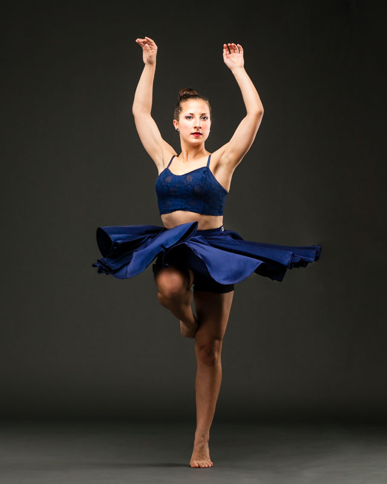

Find yourself a suitable style
We offer many different styles, so just pick yourself what you like most and join our wonderful team.
Jazz
Jazz dance is a classification shared by a broad range of dance styles. Before the 1950s, jazz dance referred to dance styles that originated from African American vernacular dance. Jazz dance was an integral part of jazz until the end of the swing era in the late 1940s. In the 1950s, a new genre of jazz dance — modern jazz dance — emerged, with roots in Caribbean traditional dance. Every individual style of jazz dance has roots traceable to one of these two distinct origins. Jazz was a big hit in the early '50s and it is still a well-loved style of dance all over the world.

Contemporary
Contemporary dance is a dance performance genre that developed during
the mid twentieth century and has since grown to become one of the dominant genres
for formally trained dancers throughout the world, with particularly strong
popularity in the U.S. and Europe. Although originally informed by and borrowing from classical,
modern, and jazz styles, it has since come to incorporate elements from many styles of dance.
Due to its technical similarities, it is often perceived to be closely related to modern dance,
ballet and other classical concert dance styles.
In terms of the focus of its technique, contemporary dance tends to utilize both the strong
and controlled legwork of ballet and modern dance's stress on the torso, and also employs contract-release,
floor work, fall and recovery, and improvisation characteristic of modern dance.
Unpredictable changes in rhythm, speed, and direction are often used, as well. It sometimes also incorporates
elements of non-western dance cultures such as elements from African dance including bent knees, or movements
from the Japanese contemporary dance Butoh.
Ballet
Ballet is a type of performance dance that originated in the Italian Renaissance
courts of the 15th century and later developed into a concert dance form in France and Russia.
It has since become a widespread, highly technical form of dance with its own vocabulary based on French terminology.
It has been globally influential and has defined the foundational techniques used in many other dance genres.
Ballet requires years of training to learn and master, and much practice to retain proficiency.
It has been taught in ballet schools around the world, which have historically incorporated their own cultures to evolve the art.
Ballet may also refer to a ballet dance work, which consists of the choreography and music for a ballet production.
A well-known example of this is The Nutcracker, a two-act ballet that was originally choreographed
by Marius Petipa and Lev Ivanov with a music score by Pyotr Ilyich Tchaikovsky.
Ballet dance works are choreographed and performed by trained artists.
Many classical ballet works are performed with classical music accompaniment and are theatrical
and use elaborate costumes and staging, though there are exceptions to this, such as neoclassical works by George Balanchine.
Hip-Hop
Hip-hop dance refers to street dance styles primarily performed to hip-hop music or that have evolved as part
of hip-hop culture. It includes a wide range of styles primarily breaking, locking, and popping which were created
in the 1970s and made popular by dance crews in the United States. The television show Soul Train and the 1980s films Breakin',
Beat Street, and Wild Style showcased these crews and dance styles in their early stages; therefore, giving hip-hop mainstream exposure.
The dance industry responded with a commercial, studio-based version of hip-hop—sometimes called "new style"—and a hip-hop
influenced style of jazz dance called "jazz-funk". Classically trained dancers developed these studio styles in order to create
choreography from the hip-hop dances that were performed on the street. Because of this development, hip-hop dance is practiced
in both dance studios and outdoor spaces.
What distinguishes hip-hop from other forms of dance is that it is often "freestyle" (improvisational)
in nature and hip-hop dance crews often engage in freestyle dance competitions—colloquially referred to as "battles".
Crews, freestyling, and battles are identifiers of this style. Hip-hop dance can be a form of entertainment or a hobby.
It can also be a way to stay active in competitive dance and a way to make a living by dancing professionally.
Interested in joining?
sendRegister here